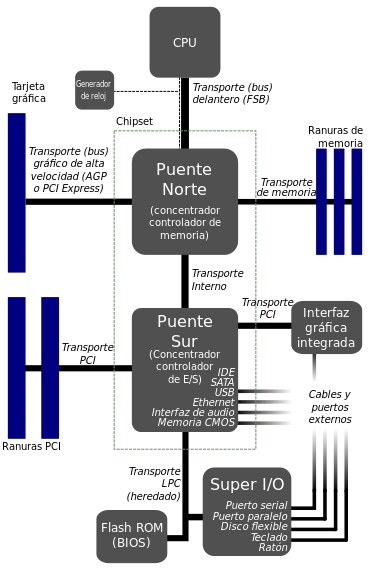
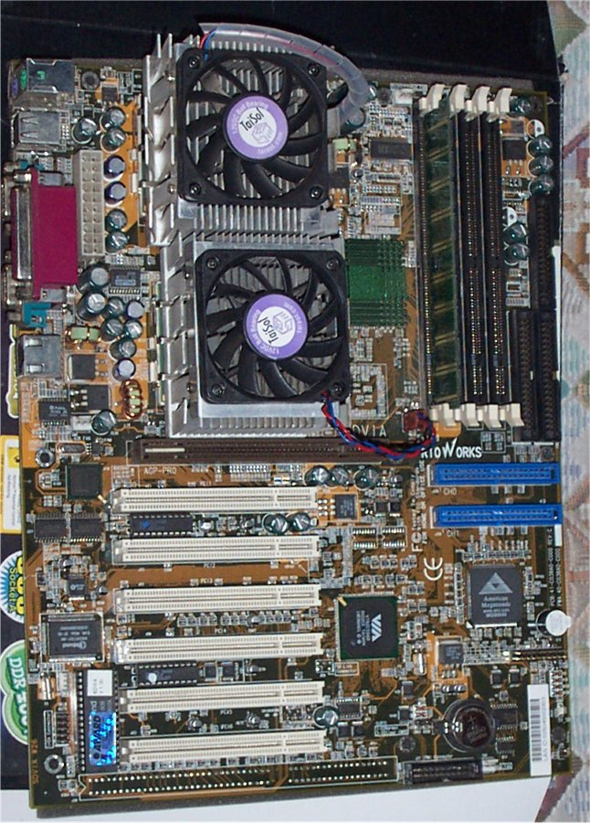

La placa base, también conocida como placa madre o placa principal (motherboard o mainboard en inglés), es una tarjeta de circuito impreso a la que se conectan los componentes que constituyen la computadora.
Es una parte fundamental para armar cualquier computadora personal de escritorio o portátil. Tiene instalados una serie de circuitos integrados, entre los que se encuentra el circuito integrado auxiliar (chipset), que sirve como centro de conexión entre el microprocesador (CPU), la memoria de acceso aleatorio (RAM), las ranuras de expansión y otros dispositivos.
Va instalada dentro de una carcasa o gabinete que por lo general está hecha de chapa y tiene un panel para conectar dispositivos externos y muchos conectores internos y zócalos para instalar componentes internos.
La placa madre, además incluye un firmware llamado BIOS, que le permite realizar las funcionalidades básicas, como pruebas de los dispositivos, vídeo y manejo del teclado, reconocimiento de dispositivos y carga del sistema operativo.

